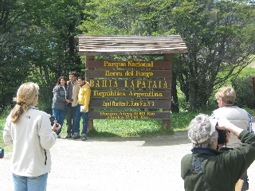
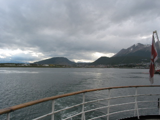

Ushuaia reminds me very much of when my family visited Hanes Alaska. It has very much the same feel. For instance, the road to the hotel outside of town that we are in for last night was gravel. The Hotel is also placed up on a hill top so that it has a rather scenic view of both the strait and the Mountains. Watching the weather outside the window reminds me even more of Alaska. Wind rain and sunshine go zipping by early this morning (I was up at 6:30).
We have most of this day to ourselves in Ushuia, before we board the boat at 1700, so I signed on for a trip to the National Park near by. Very scenic place, reminds me of Itaska State Park in Minnesota and some of Alaska. Did get to this end of the Pan-American highway, I suppose if I was really bored I could get pictures of the other end up in Alaska. This whole excursion was mildly fun since I was out here in just a light flannel (it was about 50°F). And most others were wearing heaver jackets already. Found out that many of the people that went on this little jaunt were from warmer climates.
Boarding the boat was pretty much just getting on. (bummery, I forgot to take a picture of the boat.)
The bedroom on the boat is roughly the size of a two person dorm room. There are two lower bunks and two folding upper bunks. So you could put four people into one room. I'm on the 3rd floor, the lowest passangers are on. Each level up is a bit nicer. Where 5th floor is mostly lounges, library, dinning room and some other commons.
The bathroom in the room is frightening in ways. It is ultra cramped, which only bothers me because of the manner in which the shower is really nothing more than a corner of the bathroom with a curtain. That and I wonder what it may be like if the three of us shower in the morning. Not so much for the first, but for whom ever gets to be last. That and I am taking a tiny bit of fear about shaving while the ship moves.
Took two lactaids and two sea-sickness pills about an hour before boarding. I don't want to find out if I get sea-sick at all.